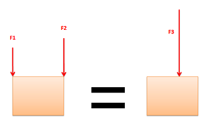
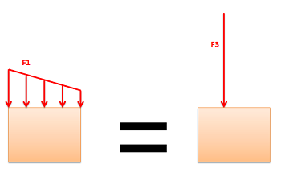
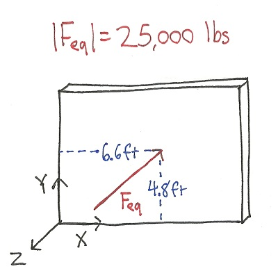

Equivalent Point Load (Point Forces)
An equivalent point load is a single point force that will have the same effect on a body as the original loading condition, which is usually either 1) several point forces or 2) a distributed load. The equivalent point load should always cause the same linear acceleration and angular acceleration as the original force or forces it is equivalent to. Finding the equivalent point load for a number of other point forces or a distributed force often helps simplify the analysis of a system. On this page we discuss the process of finding the equivalent point load for a number of point forces.
|

F3 will have the same effect on the block as F1 and F2 together. F3 is the equivalent point load for the system with F1 and F2.
|

F3 will have the same effect on the block as the distributed force F1. F3 is the equivalent point load for the distributed force F1.
|
Finding the Equivalent Point Load for Multiple Point Loads
The equivalent point load can be found for any combination of forces. This single point force will have the same effect on the system as the combination of the original forces. Like all forces, the force will have a magnitude, a direction and a point of application. The sections below outline how to find the equivalent point load for a set of concurrent forces and a set of parallel forces. Finding the equivalent point load for forces that are neither concurrent nor parallel is not covered in this book.
Concurrent Point Forces:
Magnitude and Direction: As with any type of vectors, you can find the magnitude and direction of the equivalent point load by simply adding together all the force vectors. The magnitude and direction of the sum of all the force vectors is the magnitude and direction of the equivalent point load.
\[ \mathrm{ \mathbf{F_{eq}} = \sum_{i=1}^{n} \mathbf{(F_i)} }\]Point of Application: What is special about concurrent forces is that they have lines of action that all intersect at a single point. Using the principle of transmissibility, we know that we can therefore translate the points of application to this single point of intersection without changing the effect the forces have on the body. With all forces having the same point of application, we can assume that the point of application of the equivalent point load is this same intersection point.
Parallel Point Forces:
Parallel forces are represented by vectors that all have the same direction, but different points of application.
Magnitude and Direction: Like in the concurrent forces, the magnitude and direction of the equivalent point load can be obtained by adding all the original force vectors. This particular case is made even simpler because of the fact that all vectors have the same direction, so you really just need to add the magnitudes.
Point of Application: Since there is no single point of application, the point of application will need to be determined mathematically. With two forces of equal magnitude we would assume that the point of application of the equivalent point load would be midway between the points of application of the two original forces. This is a correct assumption; the point of application of the equivalent point load will be midway between the two original points of application for forces of equal magnitude. What if the forces are not of equal magnitude though? Will the point of application be still be midway between the two original points of application or will it be closer to the larger forces point of application. The answer is that it will be closer to the larger force's point of application, so the magnitude of the force is a factor.
We know that the equivalent point load should exert the same moment on the body as the combination of the original forces. The moment a force exerts on a body around any one point is simply the magnitude of the force, times the perpendicular distance to the given point. Using this we come up with the following equation.
\[ \mathrm{ (F_{eq})(X_{eq}) = \sum_{i=1}^{n} (F_i)(x_i) }\]The magnitude of the equivalent point load \( (\mathrm{F_{eq}}) \) times the distance from the origin point to point of application of the equivalent point load \( (\mathrm{x_{eq}}) \) is equal to the sum of (the magnitde each force \( (\mathrm{F_i}) \) times its respective distance from the origin to its point of application \( (\mathrm{x_i}) \)). If we know the magnitude and location of each individual force, and since we can find the magnitude of the equivalent point load, we can solve for the only unknown. This is the distance from the origin to the point of application of the equivalent point load.
\[ \mathrm{ X_{eq} = \frac{\sum_{i=1}^{n} (F_i)(x_i)}{F_{eq}} }\]So far we have been looking at parallel forces in 2-D systems where the forces can all be lined up nicely and we only need one number (X) to describe the point of application. Next we will move to a more complicated 3-D system where we need two numbers to describe the point of application of each force (X and Y). We use the principle of transmissibility to make the Z position zero for all forces. To solve for the X and Y coordinate for the equivalent point load, we use the following formulas.
\[ \mathrm{ x_{eq} = \frac{\sum_{i=1}^{n} (F_i)(X_i)}{F_{eq}} }\] \[ \mathrm{ y_{eq} = \frac{\sum_{i=1}^{n} (F_i)(Y_i)}{F_{eq}} }\]Worked Problems
Worked Problem 1:
Find the equivalent point load for the combination of \( \mathbf{F_1} \text{, } \mathbf{F2} \text{ and } \mathbf{F3} \). Show the magnitude, direction and point of application of the equivalent point load.
| Work | Comments |
|
Magnitude and Direction:
\[ \mathrm{ \mathbf{F_{eq}} = \mathbf{F_1+F_2+F_3} = -25,000 \text{ lbs in the -Z direction} }\] |
The first step is to find the magnitude and direction of the of the equivalent point load. This is done by adding the vectors together. Since the vectors all have the same direction (-Z) we can simply add up the magnitudes. |
|
Point of Application:
\[ \mathrm{ x_{eq} = \frac{\sum_{i=1}^{n} (F_i)(x_i)}{F_{eq}} }\] \[ \mathrm{ x_{eq} = \frac{(5000 \text{ lbs} \times 3 \text{ ft})+(10000 \text{ lbs} \times 5 \text{ ft})+(10000 \text{ lbs} \times 10 \text{ ft})}{25,000 \text{ lbs}} = 6.6 \text{ ft} }\] |
Next I've decided to solve for the x coordinate of the point of application. We use the fact that the equivalent point force should exert the same moment on the body as the sum of all the original forces to solve for \( \mathrm{x_{eq}} \). |
|
\[ \mathrm{
y_{eq} = \frac{\sum_{i=1}^{n} (F_i)(y_i)}{F_{eq}}
}\]
\[ \mathrm{
y_{eq} = \frac{(5000 \text{ lbs} \times 6 \text{ ft})+(10000 \text{ lbs} \times 1 \text{ ft})+(10000 \text{ lbs} \times 8 \text{ ft})}{25,000 \text{ lbs}} = 4.8 \text{ ft}
}\]
|
Now repeat for the y coordinate. |
|

|
A diagram of the equivalent point load. |
 |
| Author: Jacob Moore has liscenced this work under a Creative Commons Attribution-NonCommercial 3.0 Unported License. |